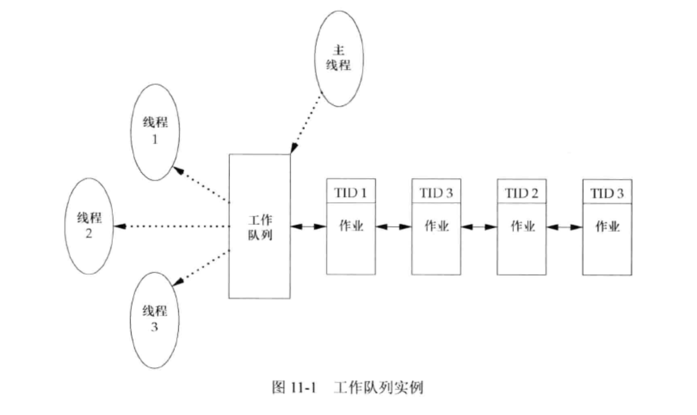
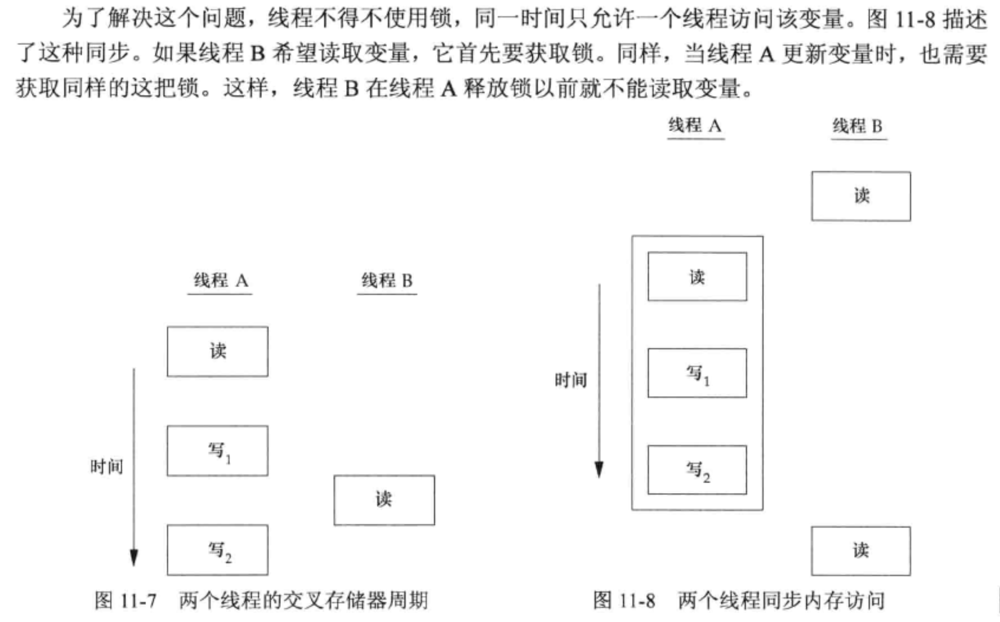

<!DOCTYPE html>
<html lang="en">

<head>
  <meta charset="utf-8" />
   
  <meta name="keywords" content="生活,旅行,思考,代码,博客" />
   
  <meta name="description" content="一座孤岛" />
  
  <meta name="viewport" content="width=device-width, initial-scale=1, maximum-scale=1" />
  <title>
    《UNIX环境高级编程》第十一章——线程 |  akaQin&#39;s Blog
  </title>
  <meta name="generator" content="hexo-theme-yilia-plus">
  
  <link rel="shortcut icon" href="/favicon.ico" />
  
  
<link rel="stylesheet" href="/css/style.css">

  
<script src="/js/pace.min.js"></script>


  

  

<link rel="alternate" href="/atom.xml" title="akaQin's Blog" type="application/atom+xml">
</head>

</html>

<body>
  <div id="app">
    <main class="content">
      <section class="outer">
  <article id="post-《UNIX环境高级编程》第十一章——线程" class="article article-type-post" itemscope
  itemprop="blogPost" data-scroll-reveal>

  <div class="article-inner">
    
    <header class="article-header">
       
<h1 class="article-title sea-center" style="border-left:0" itemprop="name">
  《UNIX环境高级编程》第十一章——线程
</h1>
  

    </header>
    

    
    <div class="article-meta">
      <a href="/2020/03/25/%E3%80%8AUNIX%E7%8E%AF%E5%A2%83%E9%AB%98%E7%BA%A7%E7%BC%96%E7%A8%8B%E3%80%8B%E7%AC%AC%E5%8D%81%E4%B8%80%E7%AB%A0%E2%80%94%E2%80%94%E7%BA%BF%E7%A8%8B/" class="article-date">
  <time datetime="2020-03-25T14:19:30.000Z" itemprop="datePublished">2020-03-25</time>
</a>
      
      
      
<div class="word_count">
    <span class="post-time">
        <span class="post-meta-item-icon">
            <i class="ri-quill-pen-line"></i>
            <span class="post-meta-item-text"> 字数统计:</span>
            <span class="post-count">2.1k字</span>
        </span>
    </span>

    <span class="post-time">
        &nbsp; | &nbsp;
        <span class="post-meta-item-icon">
            <i class="ri-book-open-line"></i>
            <span class="post-meta-item-text"> 阅读时长≈</span>
            <span class="post-count">9分钟</span>
        </span>
    </span>
</div>

      
    </div>
    

    
    
    <div class="tocbot"></div>


    

    
    <div class="article-entry" itemprop="articleBody">
      


      

      
      <h2 id="线程概念"><a href="#线程概念" class="headerlink" title="线程概念"></a>线程概念</h2><p>每个线程都包含有表示执行环境所必须的信息，包括线程ID、一组寄存器值、栈、调度优先级和策略、信号屏蔽字、errno变量以及线程私有数据。一个进程的所有信息对该进程的所有线程都是共享的，包括可执行程序的代码、程序的全局内存和堆内存、栈以及文件描述符。</p>
<h2 id="线程标识"><a href="#线程标识" class="headerlink" title="线程标识"></a>线程标识</h2><p>每个线程有一个线程ID，线程可以通过调用 pthread_self 函数获得自身的线程ID。<br></p>
<h2 id="线程创建-pthread-create"><a href="#线程创建-pthread-create" class="headerlink" title="线程创建 pthread_create"></a>线程创建 pthread_create</h2><p>线程创建时不保证哪个线程会先运行。新创建的线程可以访问进程的地址空间，并继承调用线程的浮点环境和信号屏蔽字，但是该线程的挂起信号集会被清除。</p>
<figure class="highlight c"><table><tr><td class="gutter"><pre><span class="line">1</span><br><span class="line">2</span><br><span class="line">3</span><br><span class="line">4</span><br><span class="line">5</span><br><span class="line">6</span><br><span class="line">7</span><br><span class="line">8</span><br><span class="line">9</span><br><span class="line">10</span><br><span class="line">11</span><br><span class="line">12</span><br><span class="line">13</span><br><span class="line">14</span><br><span class="line">15</span><br><span class="line">16</span><br><span class="line">17</span><br><span class="line">18</span><br><span class="line">19</span><br><span class="line">20</span><br><span class="line">21</span><br><span class="line">22</span><br><span class="line">23</span><br><span class="line">24</span><br><span class="line">25</span><br><span class="line">26</span><br><span class="line">27</span><br><span class="line">28</span><br><span class="line">29</span><br><span class="line">30</span><br></pre></td><td class="code"><pre><span class="line"><span class="meta">#<span class="meta-keyword">include</span> <span class="meta-string">"../apue.3e/include/apue.h"</span></span></span><br><span class="line"><span class="meta">#<span class="meta-keyword">include</span> <span class="meta-string">&lt;pthread.h&gt;</span></span></span><br><span class="line"></span><br><span class="line"><span class="keyword">pthread_t</span> ntid;</span><br><span class="line"></span><br><span class="line"><span class="function"><span class="keyword">void</span> <span class="title">printids</span><span class="params">(<span class="keyword">const</span> <span class="keyword">char</span> *s)</span> </span>&#123;</span><br><span class="line">    <span class="keyword">pid_t</span> pid;</span><br><span class="line">    <span class="keyword">pthread_t</span> tid;</span><br><span class="line"></span><br><span class="line">    pid = getpid();</span><br><span class="line">    tid = pthread_self();</span><br><span class="line">    <span class="built_in">printf</span>(<span class="string">"%s pid %lu tid %lu (0x%lx)\n"</span>, s, (<span class="keyword">unsigned</span> <span class="keyword">long</span>) pid, (<span class="keyword">unsigned</span> <span class="keyword">long</span>) tid, (<span class="keyword">unsigned</span> <span class="keyword">long</span>) tid);</span><br><span class="line">&#125;</span><br><span class="line"></span><br><span class="line"><span class="function"><span class="keyword">void</span> *<span class="title">thr_fn</span><span class="params">(<span class="keyword">void</span> *arg)</span> </span>&#123;</span><br><span class="line">    printids(<span class="string">"new thread: "</span>);</span><br><span class="line">    <span class="keyword">return</span> ((<span class="keyword">void</span> *) <span class="number">0</span>);</span><br><span class="line">&#125;</span><br><span class="line"></span><br><span class="line"><span class="function"><span class="keyword">int</span> <span class="title">main</span><span class="params">(<span class="keyword">void</span>)</span> </span>&#123;</span><br><span class="line">    <span class="keyword">int</span> err;</span><br><span class="line"></span><br><span class="line">    err = pthread_create(&amp;ntid, <span class="literal">NULL</span>, thr_fn, <span class="literal">NULL</span>);</span><br><span class="line">    <span class="keyword">if</span> (err != <span class="number">0</span>) &#123;</span><br><span class="line">        err_exit(err, <span class="string">"can't create thread"</span>);</span><br><span class="line">    &#125;</span><br><span class="line">    printids(<span class="string">"main thread:"</span>);</span><br><span class="line">    sleep(<span class="number">1</span>);</span><br><span class="line">    <span class="built_in">exit</span>(<span class="number">0</span>);</span><br><span class="line">&#125;</span><br></pre></td></tr></table></figure>

<p>这个实例有两个特别之处，主线程与新线程之间存在竞争：</p>
<ol>
<li>主线程如果不休眠，可能新线程还没有机会执行，整个进程就终止了</li>
<li>新线程通过调用pthread_self获取自身的线程ID，而不是从共享内存读出或从线程的启动例程中以参数形式接收，因为那样并不安全。</li>
</ol>
<a id="more"></a>
<h2 id="线程终止"><a href="#线程终止" class="headerlink" title="线程终止"></a>线程终止</h2><p>如果进程中的任意线程调用了exit、_Exit、或者_exit，那么整个进程就会终止。<br>单个线程可以在不终止整个进程的情况下，以以下三种方式停止它的控制流：</p>
<ol>
<li>线程可以简单地从启动例程中返回，返回值是线程的退出码。</li>
<li>线程可以被同一进程中的其他线程取消。</li>
<li>线程调用pthread_exit。</li>
</ol>
<figure class="highlight c"><table><tr><td class="gutter"><pre><span class="line">1</span><br><span class="line">2</span><br><span class="line">3</span><br><span class="line">4</span><br><span class="line">5</span><br><span class="line">6</span><br><span class="line">7</span><br><span class="line">8</span><br><span class="line">9</span><br><span class="line">10</span><br><span class="line">11</span><br><span class="line">12</span><br><span class="line">13</span><br><span class="line">14</span><br><span class="line">15</span><br><span class="line">16</span><br><span class="line">17</span><br><span class="line">18</span><br><span class="line">19</span><br><span class="line">20</span><br><span class="line">21</span><br><span class="line">22</span><br><span class="line">23</span><br><span class="line">24</span><br><span class="line">25</span><br><span class="line">26</span><br><span class="line">27</span><br><span class="line">28</span><br><span class="line">29</span><br><span class="line">30</span><br><span class="line">31</span><br><span class="line">32</span><br><span class="line">33</span><br><span class="line">34</span><br><span class="line">35</span><br><span class="line">36</span><br><span class="line">37</span><br><span class="line">38</span><br><span class="line">39</span><br><span class="line">40</span><br><span class="line">41</span><br><span class="line">42</span><br><span class="line">43</span><br><span class="line">44</span><br><span class="line">45</span><br><span class="line">46</span><br><span class="line">47</span><br><span class="line">48</span><br></pre></td><td class="code"><pre><span class="line"><span class="meta">#<span class="meta-keyword">include</span> <span class="meta-string">"../apue.3e/include/apue.h"</span></span></span><br><span class="line"><span class="meta">#<span class="meta-keyword">include</span> <span class="meta-string">&lt;pthread.h&gt;</span></span></span><br><span class="line"></span><br><span class="line"><span class="class"><span class="keyword">struct</span> <span class="title">foo</span> &#123;</span></span><br><span class="line">    <span class="keyword">int</span> a, b, c, d;</span><br><span class="line">&#125;;</span><br><span class="line"></span><br><span class="line"><span class="function"><span class="keyword">void</span> <span class="title">printfoo</span><span class="params">(<span class="keyword">const</span> <span class="keyword">char</span> *s, <span class="keyword">const</span> struct foo *fp)</span> </span>&#123;</span><br><span class="line">    <span class="built_in">printf</span>(<span class="string">"%s"</span>, s);</span><br><span class="line">    <span class="built_in">printf</span>(<span class="string">"  structure at 0x%lx\n"</span>, (<span class="keyword">unsigned</span> <span class="keyword">long</span>) fp);</span><br><span class="line">    <span class="built_in">printf</span>(<span class="string">"  foo.a = %d\n"</span>, fp-&gt;a);</span><br><span class="line">    <span class="built_in">printf</span>(<span class="string">"  foo.b = %d\n"</span>, fp-&gt;b);</span><br><span class="line">    <span class="built_in">printf</span>(<span class="string">"  foo.c = %d\n"</span>, fp-&gt;c);</span><br><span class="line">    <span class="built_in">printf</span>(<span class="string">"  foo.d = %d\n"</span>, fp-&gt;d);</span><br><span class="line">&#125;</span><br><span class="line"></span><br><span class="line"><span class="function"><span class="keyword">void</span> *<span class="title">thr_fn1</span><span class="params">(<span class="keyword">void</span> *arg)</span> </span>&#123;</span><br><span class="line">    <span class="class"><span class="keyword">struct</span> <span class="title">foo</span> <span class="title">foo</span> = &#123;</span><span class="number">1</span>, <span class="number">2</span>, <span class="number">3</span>, <span class="number">4</span>&#125;;</span><br><span class="line"></span><br><span class="line">    printfoo(<span class="string">"thread 1:\n"</span>, &amp;foo);</span><br><span class="line">    pthread_exit((<span class="keyword">void</span> *) &amp;foo);</span><br><span class="line">&#125;</span><br><span class="line"></span><br><span class="line"><span class="function"><span class="keyword">void</span> *<span class="title">thr_fn2</span><span class="params">(<span class="keyword">void</span> *arg)</span> </span>&#123;</span><br><span class="line">    <span class="built_in">printf</span>(<span class="string">"thread 2: ID is %lu\n"</span>, (<span class="keyword">unsigned</span> <span class="keyword">long</span>) pthread_self());</span><br><span class="line">    pthread_exit((<span class="keyword">void</span> *) <span class="number">0</span>);</span><br><span class="line">&#125;</span><br><span class="line"></span><br><span class="line"><span class="function"><span class="keyword">int</span> <span class="title">main</span><span class="params">(<span class="keyword">void</span>)</span> </span>&#123;</span><br><span class="line">    <span class="keyword">int</span> err;</span><br><span class="line">    <span class="keyword">pthread_t</span> tid1, tid2;</span><br><span class="line">    <span class="class"><span class="keyword">struct</span> <span class="title">foo</span> \*<span class="title">fp</span>;</span></span><br><span class="line"></span><br><span class="line">    err = pthread_create(&amp;tid1, <span class="literal">NULL</span>, thr_fn1, <span class="literal">NULL</span>);</span><br><span class="line">    <span class="keyword">if</span> (err != <span class="number">0</span>)</span><br><span class="line">        err_exit(err, <span class="string">"can't create thread 1"</span>);</span><br><span class="line">    err = pthread_join(tid1, (<span class="keyword">void</span> *) &amp;fp);</span><br><span class="line">    <span class="keyword">if</span> (err != <span class="number">0</span>)</span><br><span class="line">        err_exit(err, <span class="string">"can't join with thread 1"</span>);</span><br><span class="line">    sleep(<span class="number">1</span>);</span><br><span class="line">    <span class="built_in">printf</span>(<span class="string">"parent starting second thread\n"</span>);</span><br><span class="line">    err = pthread_create(&amp;tid2, <span class="literal">NULL</span>, thr_fn2, <span class="literal">NULL</span>);</span><br><span class="line">    <span class="keyword">if</span> (err != <span class="number">0</span>)</span><br><span class="line">        err_exit(err, <span class="string">"can't create thread 2"</span>);</span><br><span class="line">    sleep(<span class="number">1</span>);</span><br><span class="line">    printfoo(<span class="string">"parent:\n"</span>, fp);</span><br><span class="line">    <span class="built_in">exit</span>(<span class="number">0</span>);</span><br><span class="line">&#125;</span><br></pre></td></tr></table></figure>
<figure class="highlight bash"><table><tr><td class="gutter"><pre><span class="line">1</span><br><span class="line">2</span><br><span class="line">3</span><br><span class="line">4</span><br><span class="line">5</span><br><span class="line">6</span><br><span class="line">7</span><br><span class="line">8</span><br><span class="line">9</span><br><span class="line">10</span><br><span class="line">11</span><br><span class="line">12</span><br><span class="line">13</span><br></pre></td><td class="code"><pre><span class="line">//在macOS X上运行：</span><br><span class="line">$ ./a.out  </span><br><span class="line">thread 1:</span><br><span class="line"> structure at 0x700001aa0f90</span><br><span class="line"> foo.a = 1</span><br><span class="line"> foo.b = 2</span><br><span class="line"> foo.c = 3</span><br><span class="line"> foo.d = 4</span><br><span class="line">parent starting second thread</span><br><span class="line">thread 2: ID is 123145330233344</span><br><span class="line">parent:</span><br><span class="line"> structure at 0x700001aa0f90</span><br><span class="line">[1]    50009 segmentation fault  ./a.out</span><br></pre></td></tr></table></figure>
<p>可以看到，当主线程访问这个结构时,结构的内容（在线程tid1的栈上分配的）已经改变了。父进程试图访问已退出的第一个线程传给它的结构时，内存不再有效，这时得到的是SIGSEGV信号。为了解决这个问题，可以使用全局结构，或者用malloc函数分配结构。</p>
<p>线程可以通过pthread_cancel函数来请求取消同一进程中的其他线程。<br></p>
<h2 id="线程同步"><a href="#线程同步" class="headerlink" title="线程同步"></a>线程同步</h2><p>当进程中存在多个线程时，每个线程使用的变量可能会被其他线程读取或修改，为解决这个问题，就必须使用锁。<br></p>
<h3 id="互斥量"><a href="#互斥量" class="headerlink" title="互斥量"></a>互斥量</h3><p>互斥量本质是一把锁，在访问共享资源前加锁（对互斥量进行设置），完成后解锁（释放互斥量）。涉及以下函数：</p>
<ul>
<li>pthread_mutex_init 互斥量初始化，也可以直接用 PTHREAD_MUTEX_INITIALIZER 常量静态初始化</li>
<li>pthread_mutex_destory 释放互斥量</li>
<li>pthread_mutex_lock 对互斥量加锁，如果已经上锁，则调用线程将阻塞直至互斥量被解锁</li>
<li>pthread_mutex_trylock 对互斥量尝试加锁，成功返回0，失败不阻塞，直接返回EBUSY</li>
<li>pthread_mutex_unlock 对互斥量解锁</li>
</ul>
<h3 id="避免死锁"><a href="#避免死锁" class="headerlink" title="避免死锁"></a>避免死锁</h3><h4 id="造成死锁的原因"><a href="#造成死锁的原因" class="headerlink" title="造成死锁的原因"></a>造成死锁的原因</h4><p>如果线程对同一个互斥量加锁两次，会造成死锁；两个线程各自锁住一个互斥量，并等待对方解锁它持有的互斥量，也会造成死锁。</p>
<h4 id="避免死锁的方法："><a href="#避免死锁的方法：" class="headerlink" title="避免死锁的方法："></a>避免死锁的方法：</h4><ol>
<li>可以通过仔细控制互斥量加锁的顺序来避免死锁发生（按相同的顺序加锁）</li>
<li>使用tpthread_mutex_trylock尝试加锁，如果失败则先释放已有的锁，做好清理工作，过段时间再试<figure class="highlight c"><table><tr><td class="gutter"><pre><span class="line">1</span><br><span class="line">2</span><br><span class="line">3</span><br><span class="line">4</span><br><span class="line">5</span><br><span class="line">6</span><br><span class="line">7</span><br><span class="line">8</span><br><span class="line">9</span><br><span class="line">10</span><br><span class="line">11</span><br><span class="line">12</span><br><span class="line">13</span><br><span class="line">14</span><br><span class="line">15</span><br><span class="line">16</span><br><span class="line">17</span><br><span class="line">18</span><br><span class="line">19</span><br><span class="line">20</span><br><span class="line">21</span><br><span class="line">22</span><br><span class="line">23</span><br><span class="line">24</span><br><span class="line">25</span><br><span class="line">26</span><br><span class="line">27</span><br><span class="line">28</span><br><span class="line">29</span><br><span class="line">30</span><br><span class="line">31</span><br><span class="line">32</span><br><span class="line">33</span><br><span class="line">34</span><br><span class="line">35</span><br><span class="line">36</span><br><span class="line">37</span><br><span class="line">38</span><br><span class="line">39</span><br><span class="line">40</span><br><span class="line">41</span><br><span class="line">42</span><br><span class="line">43</span><br><span class="line">44</span><br><span class="line">45</span><br><span class="line">46</span><br><span class="line">47</span><br><span class="line">48</span><br><span class="line">49</span><br><span class="line">50</span><br><span class="line">51</span><br><span class="line">52</span><br><span class="line">53</span><br><span class="line">54</span><br><span class="line">55</span><br><span class="line">56</span><br><span class="line">57</span><br><span class="line">58</span><br><span class="line">59</span><br><span class="line">60</span><br><span class="line">61</span><br><span class="line">62</span><br><span class="line">63</span><br><span class="line">64</span><br><span class="line">65</span><br><span class="line">66</span><br><span class="line">67</span><br><span class="line">68</span><br><span class="line">69</span><br><span class="line">70</span><br><span class="line">71</span><br><span class="line">72</span><br><span class="line">73</span><br><span class="line">74</span><br><span class="line">75</span><br><span class="line">76</span><br><span class="line">77</span><br><span class="line">78</span><br><span class="line">79</span><br><span class="line">80</span><br><span class="line">81</span><br><span class="line">82</span><br><span class="line">83</span><br><span class="line">84</span><br><span class="line">85</span><br><span class="line">86</span><br><span class="line">87</span><br><span class="line">88</span><br></pre></td><td class="code"><pre><span class="line"><span class="meta">#<span class="meta-keyword">include</span> <span class="meta-string">"../apue.3e/include/apue.h"</span></span></span><br><span class="line"><span class="meta">#<span class="meta-keyword">include</span> <span class="meta-string">&lt;stdio.h&gt;</span></span></span><br><span class="line"><span class="meta">#<span class="meta-keyword">include</span> <span class="meta-string">&lt;stdlib.h&gt;</span></span></span><br><span class="line"><span class="meta">#<span class="meta-keyword">include</span> <span class="meta-string">&lt;pthread.h&gt;</span></span></span><br><span class="line"></span><br><span class="line"><span class="meta">#<span class="meta-keyword">define</span> NHASH 29</span></span><br><span class="line"><span class="meta">#<span class="meta-keyword">define</span> HASH(id) (((unsigned long) id) % NHASH)</span></span><br><span class="line"></span><br><span class="line"><span class="class"><span class="keyword">struct</span> <span class="title">foo</span> \*<span class="title">fh</span>[<span class="title">NHASH</span>];</span></span><br><span class="line"><span class="keyword">pthread_mutex_t</span> hashlock = PTHREAD_MUTEX_INITIALIZER;</span><br><span class="line"></span><br><span class="line"><span class="class"><span class="keyword">struct</span> <span class="title">foo</span> &#123;</span></span><br><span class="line">    <span class="keyword">int</span> f_count; /\* <span class="keyword">protected</span> by hashlock \*/</span><br><span class="line">    <span class="keyword">pthread_mutex_t</span> f_lock;</span><br><span class="line">    <span class="keyword">int</span> f_id;</span><br><span class="line">    <span class="class"><span class="keyword">struct</span> <span class="title">foo</span> \*<span class="title">f_next</span>;</span> /\* <span class="keyword">protected</span> by hashlock \*/</span><br><span class="line">    /\* ... more stuff here ... \*/</span><br><span class="line">&#125;;</span><br><span class="line"></span><br><span class="line"><span class="class"><span class="keyword">struct</span> <span class="title">foo</span> \* <span class="title">foo_alloc</span>(<span class="title">int</span> <span class="title">id</span>) /\* <span class="title">allocate</span> <span class="title">the</span> <span class="title">object</span> \*/</span></span><br><span class="line"><span class="class">&#123;</span></span><br><span class="line">    <span class="class"><span class="keyword">struct</span> <span class="title">foo</span> \*<span class="title">fp</span>;</span></span><br><span class="line">    <span class="keyword">int</span> idx;</span><br><span class="line"></span><br><span class="line">    <span class="keyword">if</span> ((fp = <span class="built_in">malloc</span>(<span class="keyword">sizeof</span>(struct foo))) != <span class="literal">NULL</span>) &#123;</span><br><span class="line">        fp-&gt;f_count = <span class="number">1</span>;</span><br><span class="line">        fp-&gt;f_id = id;</span><br><span class="line">        <span class="keyword">if</span> (pthread_mutex_init(&amp;fp-&gt;f_lock, <span class="literal">NULL</span>) != <span class="number">0</span>) &#123;</span><br><span class="line">            <span class="built_in">free</span>(fp);</span><br><span class="line">            <span class="keyword">return</span> (<span class="literal">NULL</span>);</span><br><span class="line">        &#125;</span><br><span class="line">        idx = HASH(id);</span><br><span class="line">        pthread_mutex_lock(&amp;hashlock);</span><br><span class="line">        fp-&gt;f_next = fh[idx];</span><br><span class="line">        fh[idx] = fp;</span><br><span class="line">        pthread_mutex_lock(&amp;fp-&gt;f_lock);</span><br><span class="line">        pthread_mutex_unlock(&amp;hashlock);</span><br><span class="line">        /\* ... <span class="keyword">continue</span> initialization ... \*/</span><br><span class="line">        pthread_mutex_unlock(&amp;fp-&gt;f_lock);</span><br><span class="line">    &#125;</span><br><span class="line">    <span class="keyword">return</span> (fp);</span><br><span class="line">&#125;</span><br><span class="line"></span><br><span class="line">void foo_hold(struct foo \*fp) /\* add a reference to the object \*/</span><br><span class="line">&#123;</span><br><span class="line">    pthread_mutex_lock(&amp;hashlock);</span><br><span class="line">    fp-&gt;f_count++;</span><br><span class="line">    pthread_mutex_unlock(&amp;hashlock);</span><br><span class="line">&#125;</span><br><span class="line"></span><br><span class="line"><span class="class"><span class="keyword">struct</span> <span class="title">foo</span> \* <span class="title">foo_find</span>(<span class="title">int</span> <span class="title">id</span>) /\* <span class="title">find</span> <span class="title">an</span> <span class="title">existing</span> <span class="title">object</span> \*/</span></span><br><span class="line"><span class="class">&#123;</span></span><br><span class="line">    <span class="class"><span class="keyword">struct</span> <span class="title">foo</span> \*<span class="title">fp</span>;</span></span><br><span class="line"></span><br><span class="line">    pthread_mutex_lock(&amp;hashlock);</span><br><span class="line">    <span class="keyword">for</span> (fp = fh[HASH(id)]; fp != <span class="literal">NULL</span>; fp = fp-&gt;f_next) &#123;</span><br><span class="line">        <span class="keyword">if</span> (fp-&gt;f_id == id) &#123;</span><br><span class="line">            fp-&gt;f_count++;</span><br><span class="line">            <span class="keyword">break</span>;</span><br><span class="line">        &#125;</span><br><span class="line">    &#125;</span><br><span class="line">    pthread_mutex_unlock(&amp;hashlock);</span><br><span class="line">    <span class="keyword">return</span> (fp);</span><br><span class="line">&#125;</span><br><span class="line"></span><br><span class="line">void foo_rele(struct foo \*fp) /\* release a reference to the object \*/</span><br><span class="line">&#123;</span><br><span class="line">    <span class="class"><span class="keyword">struct</span> <span class="title">foo</span> \*<span class="title">tfp</span>;</span></span><br><span class="line">    <span class="keyword">int</span> idx;</span><br><span class="line"></span><br><span class="line">    pthread_mutex_lock(&amp;hashlock);</span><br><span class="line">    <span class="keyword">if</span> (--fp-&gt;f_count == <span class="number">0</span>) &#123; /\* last reference, <span class="built_in">remove</span> from <span class="built_in">list</span> \*/</span><br><span class="line">        idx = HASH(fp-&gt;f_id);</span><br><span class="line">        tfp = fh[idx];</span><br><span class="line">        <span class="keyword">if</span> (tfp == fp) &#123;</span><br><span class="line">            fh[idx] = fp-&gt;f_next;</span><br><span class="line">        &#125; <span class="keyword">else</span> &#123;</span><br><span class="line">            <span class="keyword">while</span> (tfp-&gt;f_next != fp)</span><br><span class="line">                tfp = tfp-&gt;f_next;</span><br><span class="line">            tfp-&gt;f_next = fp-&gt;f_next;</span><br><span class="line">        &#125;</span><br><span class="line">        pthread_mutex_unlock(&amp;hashlock);</span><br><span class="line">        pthread_mutex_destroy(&amp;fp-&gt;f_lock);</span><br><span class="line">        <span class="built_in">free</span>(fp);</span><br><span class="line">    &#125; <span class="keyword">else</span> &#123;</span><br><span class="line">        pthread_mutex_unlock(&amp;hashlock);</span><br><span class="line">    &#125;</span><br><span class="line">&#125;</span><br></pre></td></tr></table></figure>

</li>
</ol>
<p><em>多线程的软件设计要注意锁的粒度：如果锁的粒度太粗，就会出现多线程阻塞等待相同的锁，这可能并不能改善并发性；如果锁的粒度太细，那么过多的锁开销会使系统性能受影响，而且代码变得复杂。作为一个程序员，需要在满足锁需求的情况下，在代码复杂性和性能之间找到正确的平衡。</em></p>
<h4 id="带有超时的互斥量"><a href="#带有超时的互斥量" class="headerlink" title="带有超时的互斥量"></a>带有超时的互斥量</h4><p>函数 pthread_mutex_timedlock，加锁时设置一个愿意等待的绝对时间，超时后放弃加锁，返回错误码ETIMEDOUT。</p>
<h3 id="读写锁"><a href="#读写锁" class="headerlink" title="读写锁"></a>读写锁</h3><p>读写锁与互斥量类似，但允许更高的并行性。非常适合于对数据结构读的次数远大于写的情况。</p>
<ul>
<li>pthread_rwlock_init 初始化</li>
<li>pthread_rwlock_destory 销毁</li>
<li>pthread_rwlock_rdlock 加读锁</li>
<li>pthread_rwlock_wrlock 加写锁</li>
<li>pthread_rwlock_unlock 解锁</li>
<li>pthread_rwlock_tryrdlock 尝试加读锁</li>
<li>pthread_rwlock_trywrlock 尝试加写锁</li>
</ul>
<p>下面的例子通过读写锁实现了一个多线程的作业请求队列</p>
<figure class="highlight c"><table><tr><td class="gutter"><pre><span class="line">1</span><br><span class="line">2</span><br><span class="line">3</span><br><span class="line">4</span><br><span class="line">5</span><br><span class="line">6</span><br><span class="line">7</span><br><span class="line">8</span><br><span class="line">9</span><br><span class="line">10</span><br><span class="line">11</span><br><span class="line">12</span><br><span class="line">13</span><br><span class="line">14</span><br><span class="line">15</span><br><span class="line">16</span><br><span class="line">17</span><br><span class="line">18</span><br><span class="line">19</span><br><span class="line">20</span><br><span class="line">21</span><br><span class="line">22</span><br><span class="line">23</span><br><span class="line">24</span><br><span class="line">25</span><br><span class="line">26</span><br><span class="line">27</span><br><span class="line">28</span><br><span class="line">29</span><br><span class="line">30</span><br><span class="line">31</span><br><span class="line">32</span><br><span class="line">33</span><br><span class="line">34</span><br><span class="line">35</span><br><span class="line">36</span><br><span class="line">37</span><br><span class="line">38</span><br><span class="line">39</span><br><span class="line">40</span><br><span class="line">41</span><br><span class="line">42</span><br><span class="line">43</span><br><span class="line">44</span><br><span class="line">45</span><br><span class="line">46</span><br><span class="line">47</span><br><span class="line">48</span><br><span class="line">49</span><br><span class="line">50</span><br><span class="line">51</span><br><span class="line">52</span><br><span class="line">53</span><br><span class="line">54</span><br><span class="line">55</span><br><span class="line">56</span><br><span class="line">57</span><br><span class="line">58</span><br><span class="line">59</span><br><span class="line">60</span><br><span class="line">61</span><br><span class="line">62</span><br><span class="line">63</span><br><span class="line">64</span><br><span class="line">65</span><br><span class="line">66</span><br><span class="line">67</span><br><span class="line">68</span><br><span class="line">69</span><br><span class="line">70</span><br><span class="line">71</span><br><span class="line">72</span><br><span class="line">73</span><br><span class="line">74</span><br><span class="line">75</span><br><span class="line">76</span><br><span class="line">77</span><br><span class="line">78</span><br><span class="line">79</span><br><span class="line">80</span><br><span class="line">81</span><br><span class="line">82</span><br><span class="line">83</span><br><span class="line">84</span><br><span class="line">85</span><br><span class="line">86</span><br><span class="line">87</span><br><span class="line">88</span><br><span class="line">89</span><br><span class="line">90</span><br><span class="line">91</span><br><span class="line">92</span><br><span class="line">93</span><br></pre></td><td class="code"><pre><span class="line"><span class="meta">#<span class="meta-keyword">include</span> <span class="meta-string">"../apue.3e/include/apue.h"</span></span></span><br><span class="line"><span class="meta">#<span class="meta-keyword">include</span> <span class="meta-string">&lt;stdlib.h&gt;</span></span></span><br><span class="line"><span class="meta">#<span class="meta-keyword">include</span> <span class="meta-string">&lt;pthread.h&gt;</span></span></span><br><span class="line"></span><br><span class="line"><span class="class"><span class="keyword">struct</span> <span class="title">job</span> &#123;</span></span><br><span class="line">    <span class="class"><span class="keyword">struct</span> <span class="title">job</span> \*<span class="title">next</span>;</span></span><br><span class="line">    <span class="class"><span class="keyword">struct</span> <span class="title">job</span> \*<span class="title">prev</span>;</span></span><br><span class="line">    <span class="keyword">pthread_t</span> id;</span><br><span class="line">&#125;;</span><br><span class="line"></span><br><span class="line"><span class="class"><span class="keyword">struct</span> <span class="title">queue</span> &#123;</span></span><br><span class="line">    <span class="class"><span class="keyword">struct</span> <span class="title">job</span> \*<span class="title">head</span>;</span></span><br><span class="line">    <span class="class"><span class="keyword">struct</span> <span class="title">job</span> \*<span class="title">tail</span>;</span></span><br><span class="line">    <span class="keyword">pthread_rwlock_t</span> lock;</span><br><span class="line">&#125;;</span><br><span class="line"></span><br><span class="line"><span class="function"><span class="keyword">int</span> <span class="title">queue_init</span><span class="params">(struct <span class="built_in">queue</span> \*qp)</span></span></span><br><span class="line"><span class="function"></span>&#123;</span><br><span class="line">    <span class="keyword">int</span> err;</span><br><span class="line">    qp-&gt;head = <span class="literal">NULL</span>;</span><br><span class="line">    qp-&gt;tail = <span class="literal">NULL</span>;</span><br><span class="line">    <span class="keyword">if</span> ((err = pthread_rwlock_init(&amp;qp-&gt;lock, <span class="literal">NULL</span>)) != <span class="number">0</span>) &#123;</span><br><span class="line">        <span class="keyword">return</span> err;</span><br><span class="line">    &#125;</span><br><span class="line"></span><br><span class="line">    <span class="keyword">return</span> <span class="number">0</span>;</span><br><span class="line">&#125;</span><br><span class="line"></span><br><span class="line"><span class="function"><span class="keyword">void</span> <span class="title">job_insert</span><span class="params">(struct <span class="built_in">queue</span> \*qp, struct job \*jp)</span></span></span><br><span class="line"><span class="function"></span>&#123;</span><br><span class="line">    pthread_rwlock_wrlock(&amp;qp-&gt;lock);</span><br><span class="line">    jp-&gt;next = qp-&gt;head;</span><br><span class="line">    jp-&gt;prev = <span class="literal">NULL</span>;</span><br><span class="line">    <span class="keyword">if</span> (qp-&gt;head == <span class="literal">NULL</span>) &#123;</span><br><span class="line">        qp-&gt;tail = jp;</span><br><span class="line">    &#125; <span class="keyword">else</span> &#123;</span><br><span class="line">        qp-&gt;head-&gt;prev = jp;</span><br><span class="line">    &#125;</span><br><span class="line">    qp-&gt;head = jp;</span><br><span class="line">    pthread_rwlock_unlock(&amp;qp-&gt;lock);</span><br><span class="line">&#125;</span><br><span class="line"></span><br><span class="line"><span class="function"><span class="keyword">void</span> <span class="title">job_append</span><span class="params">(struct <span class="built_in">queue</span> \*qp, struct job \*jp)</span></span></span><br><span class="line"><span class="function"></span>&#123;</span><br><span class="line">    pthread_rwlock_wrlock(&amp;qp-&gt;lock);</span><br><span class="line">    jp-&gt;next = <span class="literal">NULL</span>;</span><br><span class="line">    jp-&gt;prev = qp-&gt;tail;</span><br><span class="line">    <span class="keyword">if</span> (qp-&gt;head == <span class="literal">NULL</span>) &#123;</span><br><span class="line">        qp-&gt;head = jp;</span><br><span class="line">    &#125; <span class="keyword">else</span> &#123;</span><br><span class="line">        qp-&gt;tail-&gt;next = jp;</span><br><span class="line">    &#125;</span><br><span class="line">    qp-&gt;tail = jp;</span><br><span class="line">    pthread_rwlock_unlock(&amp;qp-&gt;lock);</span><br><span class="line">&#125;</span><br><span class="line"></span><br><span class="line"><span class="function"><span class="keyword">void</span> <span class="title">job_remove</span><span class="params">(struct <span class="built_in">queue</span> \*qp, struct job \*jp)</span></span></span><br><span class="line"><span class="function"></span>&#123;</span><br><span class="line">    pthread_rwlock_wrlock(&amp;qp-&gt;lock);</span><br><span class="line">    <span class="keyword">if</span> (jp == qp-&gt;head) &#123;</span><br><span class="line">        qp-&gt;head = jp-&gt;next;</span><br><span class="line">        <span class="keyword">if</span> (qp-&gt;tail == jp) &#123;</span><br><span class="line">            qp-&gt;tail = <span class="literal">NULL</span>;</span><br><span class="line">        &#125; <span class="keyword">else</span> &#123;</span><br><span class="line">            jp-&gt;next-&gt;prev = jp-&gt;prev;</span><br><span class="line">        &#125;</span><br><span class="line">    &#125; <span class="keyword">else</span> <span class="keyword">if</span> (jp == qp-&gt;tail) &#123;</span><br><span class="line">        qp-&gt;tail = jp-&gt;prev;</span><br><span class="line">        jp-&gt;prev-&gt;next = jp-&gt;next;</span><br><span class="line">    &#125; <span class="keyword">else</span> &#123;</span><br><span class="line">        jp-&gt;prev-&gt;next = jp-&gt;next;</span><br><span class="line">        jp-&gt;next-&gt;prev = jp-&gt;prev;</span><br><span class="line">    &#125;</span><br><span class="line">    pthread_rwlock_unlock(&amp;qp-&gt;lock);</span><br><span class="line">&#125;</span><br><span class="line"></span><br><span class="line"><span class="class"><span class="keyword">struct</span> <span class="title">job</span> \*<span class="title">job_find</span>(<span class="title">struct</span> <span class="title">queue</span> \*<span class="title">qp</span>, <span class="title">pthread_t</span> <span class="title">id</span>)</span></span><br><span class="line"><span class="class">&#123;</span></span><br><span class="line">    <span class="class"><span class="keyword">struct</span> <span class="title">job</span> \*<span class="title">jp</span> = <span class="title">NULL</span>;</span></span><br><span class="line"></span><br><span class="line">    <span class="keyword">if</span> (pthread_rwlock_rdlock(&amp;qp-&gt;lock) != <span class="number">0</span>) &#123;</span><br><span class="line">        <span class="keyword">return</span>(<span class="literal">NULL</span>);</span><br><span class="line">    &#125;</span><br><span class="line"></span><br><span class="line">    <span class="keyword">for</span> (jp = qp-&gt;head; jp != <span class="literal">NULL</span>; jp = jp-&gt;next) &#123;</span><br><span class="line">        <span class="keyword">if</span> (pthread_equal(jp-&gt;id, id)) &#123;</span><br><span class="line">            <span class="keyword">break</span>;</span><br><span class="line">        &#125;</span><br><span class="line">    &#125;</span><br><span class="line"></span><br><span class="line">    pthread_rwlock_unlock(&amp;qp-&gt;lock);</span><br><span class="line">    <span class="keyword">return</span> jp;</span><br><span class="line">&#125;</span><br></pre></td></tr></table></figure>

<h4 id="带有超时的读写锁"><a href="#带有超时的读写锁" class="headerlink" title="带有超时的读写锁"></a>带有超时的读写锁</h4><p>函数 pthread_rwlock_timedrdlock 和 pthread_rwlock_timedwdlock 提供带有超时的加锁功能，避免在获取锁时永久阻塞。</p>
<h3 id="条件变量"><a href="#条件变量" class="headerlink" title="条件变量"></a>条件变量</h3>
      
      <!-- reward -->
      
      <div id="reward-btn">
        打赏
      </div>
      
    </div>
    

      <!-- copyright -->
      
        <div class="declare">
          <ul class="post-copyright">
            <li>
              <i class="ri-copyright-line"></i>
              <strong>版权声明： </strong s>
              本博客所有文章除特别声明外，均采用 <a href="https://www.apache.org/licenses/LICENSE-2.0.html" rel="external nofollow"
                target="_blank">Apache License 2.0</a> 许可协议。转载请注明出处！
            </li>
          </ul>
        </div>
        
    <footer class="article-footer">
      
          
<div class="share-btn">
      <span class="share-sns share-outer">
        <i class="ri-share-forward-line"></i>
        分享
      </span>
      <div class="share-wrap">
        <i class="arrow"></i>
        <div class="share-icons">
          
          <a class="weibo share-sns" href="javascript:;" data-type="weibo">
            <i class="ri-weibo-fill"></i>
          </a>
          <a class="weixin share-sns wxFab" href="javascript:;" data-type="weixin">
            <i class="ri-wechat-fill"></i>
          </a>
          <a class="qq share-sns" href="javascript:;" data-type="qq">
            <i class="ri-qq-fill"></i>
          </a>
          <a class="douban share-sns" href="javascript:;" data-type="douban">
            <i class="ri-douban-line"></i>
          </a>
          <!-- <a class="qzone share-sns" href="javascript:;" data-type="qzone">
            <i class="icon icon-qzone"></i>
          </a> -->
          
          <a class="facebook share-sns" href="javascript:;" data-type="facebook">
            <i class="ri-facebook-circle-fill"></i>
          </a>
          <a class="twitter share-sns" href="javascript:;" data-type="twitter">
            <i class="ri-twitter-fill"></i>
          </a>
          <a class="google share-sns" href="javascript:;" data-type="google">
            <i class="ri-google-fill"></i>
          </a>
        </div>
      </div>
</div>

<div class="wx-share-modal">
    <a class="modal-close" href="javascript:;"><i class="ri-close-circle-line"></i></a>
    <p>扫一扫，分享到微信</p>
    <div class="wx-qrcode">
      
    </div>
</div>

<div id="share-mask"></div>
      
      

    </footer>

  </div>

  
  
  <nav class="article-nav">
    
    
      <a href="/2020/03/13/%E3%80%8AUNIX%E7%8E%AF%E5%A2%83%E9%AB%98%E7%BA%A7%E7%BC%96%E7%A8%8B%E3%80%8B%E7%AC%AC%E5%8D%81%E7%AB%A0%E2%80%94%E2%80%94%E4%BF%A1%E5%8F%B7/" class="article-nav-link">
        <strong class="article-nav-caption">下一篇</strong>
        <div class="article-nav-title">《UNIX环境高级编程》第十章——信号</div>
      </a>
    
  </nav>


  

  
  
<!-- valine评论 -->
<div id="vcomments-box">
    <div id="vcomments">
    </div>
</div>
<script src="//cdn1.lncld.net/static/js/3.0.4/av-min.js"></script>
<script src='https://cdn.jsdelivr.net/npm/valine@1.3.10/dist/Valine.min.js'></script>
<script>
    new Valine({
        el: '#vcomments',
        app_id: 'X2Yrs2HgM1dBr94LBlfP7Jsj-gzGzoHsz',
        app_key: 'x2WQjNYF5CQseEAN1iSqXOLQ',
        path: window.location.pathname,
        notify: 'true',
        verify: 'false',
        avatar: 'mp',
        placeholder: '给我的文章加点评论吧~',
        recordIP: true
    });
    const infoEle = document.querySelector('#vcomments .info');
    if (infoEle && infoEle.childNodes && infoEle.childNodes.length > 0) {
        infoEle.childNodes.forEach(function (item) {
            item.parentNode.removeChild(item);
        });
    }
</script>
<style>
    #vcomments-box {
        padding: 5px 30px;
    }

    @media screen and (max-width: 800px) {
        #vcomments-box {
            padding: 5px 0px;
        }
    }

    #vcomments-box #vcomments {
        background-color: #fff;
    }

    .v .vlist .vcard .vh {
        padding-right: 20px;
    }

    .v .vlist .vcard {
        padding-left: 10px;
    }
</style>

  

  
  
  

</article>

</section>
      <footer class="footer">
  <div class="outer">
    <ul class="list-inline">
      <li>
        &copy;
        2019-2020
        Arron Qin
      </li>
      <li>
        
      </li>
    </ul>
    <ul class="list-inline">
      <li>
        
        
        <span>
  <i>PV:<span id="busuanzi_value_page_pv"></span></i>
  <i>UV:<span id="busuanzi_value_site_uv"></span></i>
</span>
        
      </li>
      <li>
        <!-- cnzz统计 -->
        
      </li>
    </ul>
  </div>
</footer>
    <div class="to_top">
        <div class="totop" id="totop">
  <i class="ri-arrow-up-line"></i>
</div>
      </div>
    </main>
      <aside class="sidebar">
        <button class="navbar-toggle"></button>
<nav class="navbar">
  
  <div class="logo">
    <a href="/"></a>
  </div>
  
  <ul class="nav nav-main">
    
    <li class="nav-item">
      <a class="nav-item-link" href="/">主页</a>
    </li>
    
    <li class="nav-item">
      <a class="nav-item-link" href="/archives">归档</a>
    </li>
    
    <li class="nav-item">
      <a class="nav-item-link" href="/categories">分类</a>
    </li>
    
    <li class="nav-item">
      <a class="nav-item-link" href="/tags">标签</a>
    </li>
    
    <li class="nav-item">
      <a class="nav-item-link" href="/about/me">关于我</a>
    </li>
    
  </ul>
</nav>
<nav class="navbar navbar-bottom">
  <ul class="nav">
    <li class="nav-item">
      
      <a class="nav-item-link nav-item-search"  title="Search">
        <i class="ri-search-line"></i>
      </a>
      
      
      <a class="nav-item-link" target="_blank" href="/atom.xml" title="RSS Feed">
        <i class="ri-rss-line"></i>
      </a>
      
    </li>
  </ul>
</nav>
<div class="search-form-wrap">
  <div class="local-search local-search-plugin">
  <input type="search" id="local-search-input" class="local-search-input" placeholder="Search...">
  <div id="local-search-result" class="local-search-result"></div>
</div>
</div>
      </aside>
      <div id="mask"></div>

<!-- #reward -->
<div id="reward">
  <span class="close"><i class="ri-close-line"></i></span>
  <p class="reward-p"><i class="ri-cup-line"></i>请我喝杯咖啡吧~</p>
  <div class="reward-box">
    
    <div class="reward-item">
      
      <span class="reward-type">支付宝</span>
    </div>
    
    
    <div class="reward-item">
      
      <span class="reward-type">微信</span>
    </div>
    
  </div>
</div>
      
<script src="/js/jquery-2.0.3.min.js"></script>


<script src="/js/jquery.justifiedGallery.min.js"></script>


<script src="/js/lazyload.min.js"></script>


<script src="/js/busuanzi-2.3.pure.min.js"></script>


<script src="/js/share.js"></script>


<script src="/fancybox/jquery.fancybox.min.js"></script>


<script>
  try {
    var typed = new Typed("#subtitle", {
    strings: ['面朝大海，春暖花开','愿你一生努力，一生被爱','想要的都拥有，得不到的都释怀'],
    startDelay: 0,
    typeSpeed: 200,
    loop: true,
    backSpeed: 100,
    showCursor: true
    });
  } catch (err) {
  }
  
</script>


<script src="/js/tocbot.min.js"></script>

<script>
  // Tocbot_v4.7.0  http://tscanlin.github.io/tocbot/
  tocbot.init({
    tocSelector: '.tocbot',
    contentSelector: '.article-entry',
    headingSelector: 'h1, h2, h3, h4, h5, h6',
    hasInnerContainers: true,
    scrollSmooth: true,
    scrollContainer:'main',
    positionFixedSelector: '.tocbot',
    positionFixedClass: 'is-position-fixed',
    fixedSidebarOffset: 'auto',
    onClick: (e) => {
      $('.toc-link').removeClass('is-active-link');
      $(`a[href=${e.target.hash}]`).addClass('is-active-link');
      $(e.target.hash).scrollIntoView();
      return false;
    }
  });
</script>


<script>
  var ayerConfig = {
    mathjax: false
  }
</script>


<script src="/js/ayer.js"></script>


<script src="https://cdn.jsdelivr.net/npm/jquery-modal@0.9.2/jquery.modal.min.js"></script>
<link rel="stylesheet" href="https://cdn.jsdelivr.net/npm/jquery-modal@0.9.2/jquery.modal.min.css">


<!-- Root element of PhotoSwipe. Must have class pswp. -->
<div class="pswp" tabindex="-1" role="dialog" aria-hidden="true">

    <!-- Background of PhotoSwipe. 
         It's a separate element as animating opacity is faster than rgba(). -->
    <div class="pswp__bg"></div>

    <!-- Slides wrapper with overflow:hidden. -->
    <div class="pswp__scroll-wrap">

        <!-- Container that holds slides. 
            PhotoSwipe keeps only 3 of them in the DOM to save memory.
            Don't modify these 3 pswp__item elements, data is added later on. -->
        <div class="pswp__container">
            <div class="pswp__item"></div>
            <div class="pswp__item"></div>
            <div class="pswp__item"></div>
        </div>

        <!-- Default (PhotoSwipeUI_Default) interface on top of sliding area. Can be changed. -->
        <div class="pswp__ui pswp__ui--hidden">

            <div class="pswp__top-bar">

                <!--  Controls are self-explanatory. Order can be changed. -->

                <div class="pswp__counter"></div>

                <button class="pswp__button pswp__button--close" title="Close (Esc)"></button>

                <button class="pswp__button pswp__button--share" style="display:none" title="Share"></button>

                <button class="pswp__button pswp__button--fs" title="Toggle fullscreen"></button>

                <button class="pswp__button pswp__button--zoom" title="Zoom in/out"></button>

                <!-- Preloader demo http://codepen.io/dimsemenov/pen/yyBWoR -->
                <!-- element will get class pswp__preloader--active when preloader is running -->
                <div class="pswp__preloader">
                    <div class="pswp__preloader__icn">
                        <div class="pswp__preloader__cut">
                            <div class="pswp__preloader__donut"></div>
                        </div>
                    </div>
                </div>
            </div>

            <div class="pswp__share-modal pswp__share-modal--hidden pswp__single-tap">
                <div class="pswp__share-tooltip"></div>
            </div>

            <button class="pswp__button pswp__button--arrow--left" title="Previous (arrow left)">
            </button>

            <button class="pswp__button pswp__button--arrow--right" title="Next (arrow right)">
            </button>

            <div class="pswp__caption">
                <div class="pswp__caption__center"></div>
            </div>

        </div>

    </div>

</div>

<link rel="stylesheet" href="https://cdn.jsdelivr.net/npm/photoswipe@4.1.3/dist/photoswipe.min.css">
<link rel="stylesheet" href="https://cdn.jsdelivr.net/npm/photoswipe@4.1.3/dist/default-skin/default-skin.css">
<script src="https://cdn.jsdelivr.net/npm/photoswipe@4.1.3/dist/photoswipe.min.js"></script>
<script src="https://cdn.jsdelivr.net/npm/photoswipe@4.1.3/dist/photoswipe-ui-default.min.js"></script>

<script>
    function viewer_init() {
        let pswpElement = document.querySelectorAll('.pswp')[0];
        let $imgArr = document.querySelectorAll(('.article-entry img:not(.reward-img)'))

        $imgArr.forEach(($em, i) => {
            $em.onclick = () => {
                // slider展开状态
                // todo: 这样不好，后面改成状态
                if (document.querySelector('.left-col.show')) return
                let items = []
                $imgArr.forEach(($em2, i2) => {
                    let img = $em2.getAttribute('data-idx', i2)
                    let src = $em2.getAttribute('data-target') || $em2.getAttribute('src')
                    let title = $em2.getAttribute('alt')
                    // 获得原图尺寸
                    const image = new Image()
                    image.src = src
                    items.push({
                        src: src,
                        w: image.width || $em2.width,
                        h: image.height || $em2.height,
                        title: title
                    })
                })
                var gallery = new PhotoSwipe(pswpElement, PhotoSwipeUI_Default, items, {
                    index: parseInt(i)
                });
                gallery.init()
            }
        })
    }
    viewer_init()
</script>


<script type="text/javascript" src="https://js.users.51.la/20544303.js"></script>
  </div>
</body>

</html>